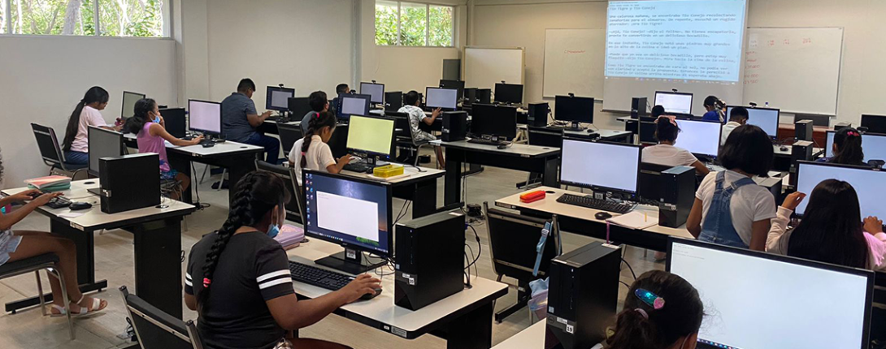
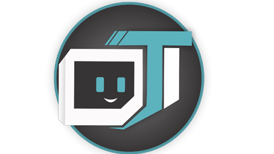
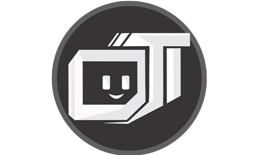

En 2018, mientras cursaba en la Universidad Felipe Carrillo Puerto de Mérida, Yucatán, di vida a este proyecto. Soy Alejandro Azcorra, y mi pasión por la tecnología y el diseño gráfico me llevó a fundar Team Informatics.
Soy Alejandro Azcorra, tengo 28 años y he crecido junto con las nuevas tecnologías. Me gradué en Informática y Sistemas de Seguridad, y luego me hice una especialidad en Diseño Gráfico Digital. Me dedico al programación web, especialmente en el área de FrontEnd, y actualmente trabajo como diseñador gráfico freelance. Combino mis habilidades técnicas con una gran dosis de creatividad, siempre buscando innovar en cada proyecto que tomo.
Todo comenzó durante un examen parcial en la universidad. Me tocó trabajar en equipo con mis compañeros en un proyecto que requería crear una empresa ficticia. Al principio, elegimos el nombre "Info-Technology", pero no me convenció del todo. Entonces propuse el nombre "Jóvenes Informáticos". Sin embargo, al día siguiente, inspirado por un nuevo significado que tenía para mí, cambié el nombre a "Teen Informatics". Aunque sabía que la traducción literal al inglés no era perfecta, para mí tenía un significado especial que compartí con mis compañeros y profesores, logrando que todos se sintieran conectados con la idea.
cuando se creo teen informatics, usaban un logo muy pobre, constaba de una "T" y una "I" en mayuscula con un circulo de soble capa al rededor de las letras. Ese mismo día, alejandro recordo la forma que tenian las computadoras macintosh. y decidio usar esa misma imagen para luego agregarle la TI a un costado.
Mas tarde esa misma semana, habian visto avrios modelos de pc tipo animados con personificación.
pasaron 3 semanas en la que iban cambiando el logo para su empresa, y siguian sin estar conformes con alguno. Por más ejemplos que ellos vieran, no lograban tener una idea clara para su marca.
Este fue el primer diseño que, durante varios años, apoyó todos los proyectos escolares y
personales.

Tras varios años de trabajo en su proyecto final, finalmente lograron diseñar el logo perfecto
para su empresa.
